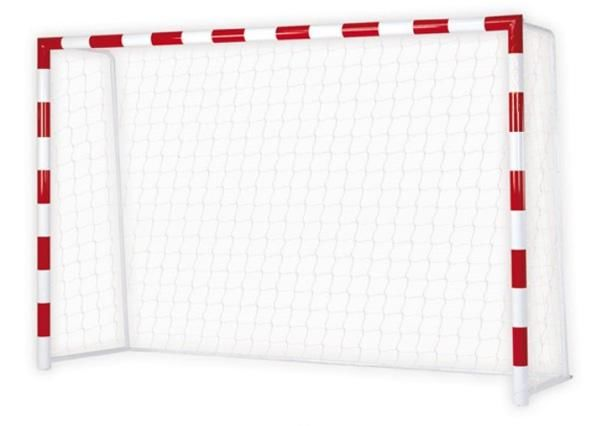

Introducción
Vamos a pensar que tenemos un conjunto de números, y queremos contarle a un amigo o amiga que dicen esos números de forma resumida.
Por ejemplo, supongamos que tenemos los goles que ha marcado el Real Madrid en cada partido durante toda la temporada. Si nosotros fuéramos el entrenador del próximo equipo que se enfrentará al Real Madrid, nos gustaría saber cuantos goles marca más frecuentemente en cada partido nuestro adversario, para así poner una determinada alineación.

Pues esta es, ni más ni menos, la definición de moda.